Open source · MIT · Apple silicon
Long memory for the small model on your Mac.
CAMR keeps the model's own keys and values for everything you tell it, in rooms on the SSD. Each question gets the one room it is about, already read. Nothing is pasted in and read again. Nothing leaves the Mac.
curl -fsSL https://raw.githubusercontent.com/Satasdin/CAMR/camr-build/packaging/install.sh | shuv tool install "camr-engine @ git+https://github.com/Satasdin/CAMR.git@camr-build#subdirectory=v2"brew install --HEAD $USER/camr/camrnpm install -g ./packaging/npm && camr-memory serveNeeds an M1 Mac or later and Python 3.11+ or uv. Homebrew and npm install from a clone for now: see Integrations.
The tensor view
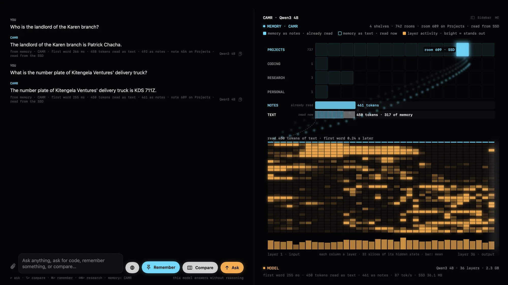
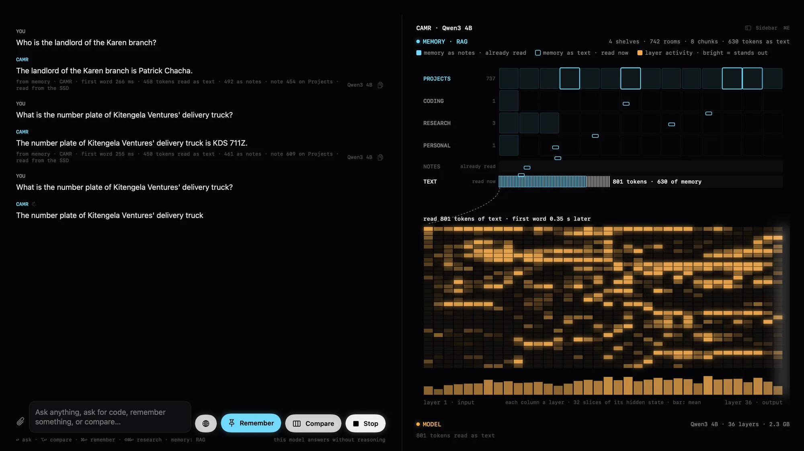
How it works
RAG pastes text and reads it again. CAMR hands over notes already read.
Same question, same model, same memory, captured live in the app. With CAMR, the one room it chose arrives as the model's own keys and values. With RAG, eight chunks arrive as text the model has to read again, every time.
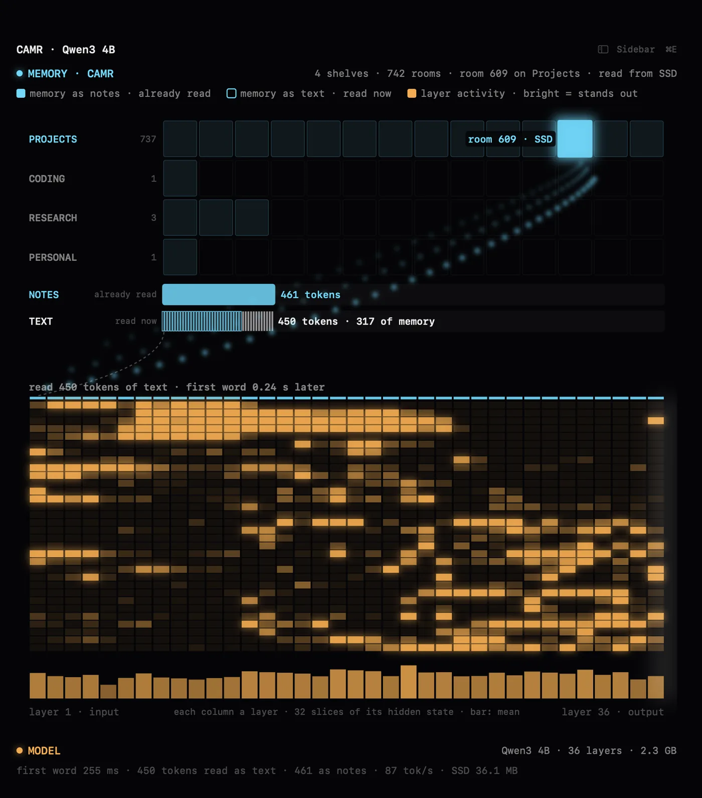
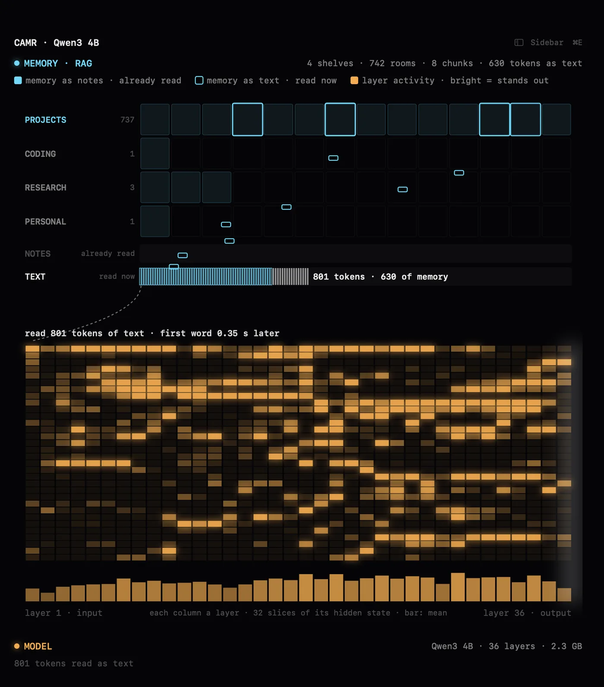
- 1
Tell it
Every moment is kept as the model's own keys and values, filed into rooms of up to 512 tokens on the SSD. The words go to a plain Markdown vault too.
- 2
Ask
The question is embedded once. The room holding the closest moment is read in one SSD burst and laid on the desk, with the 4 closest moments as words.
- 3
Answer
The model starts from that desk already read and reads only the new words: the question and a little text. The first word comes in a fraction of a second.


Benchmarks
Past Claude's window, Claude forgets. CAMR holds at 29.
The Long Haul is a scripted 2–4M-token software project: chat, meetings, decisions, code, documents and logs over 220 working days, with facts planted early and asked late. Every answer is graded by a rule. Claude is the yardstick: it reads the newest 1M tokens that fit its window, with no memory engine.
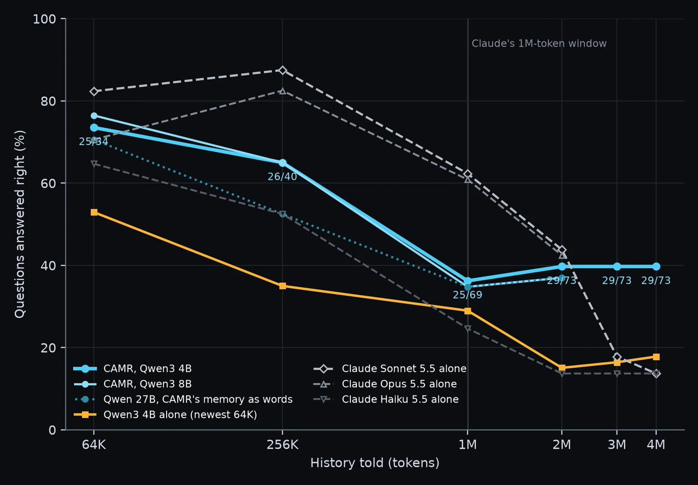
Honest read: under 1M tokens Claude is ahead (Sonnet 43 vs 25 of 69 at 1M). CAMR's case is what happens after, and what it costs.
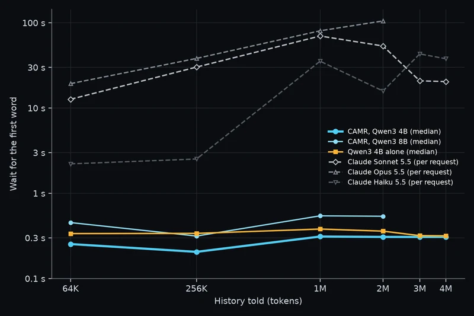
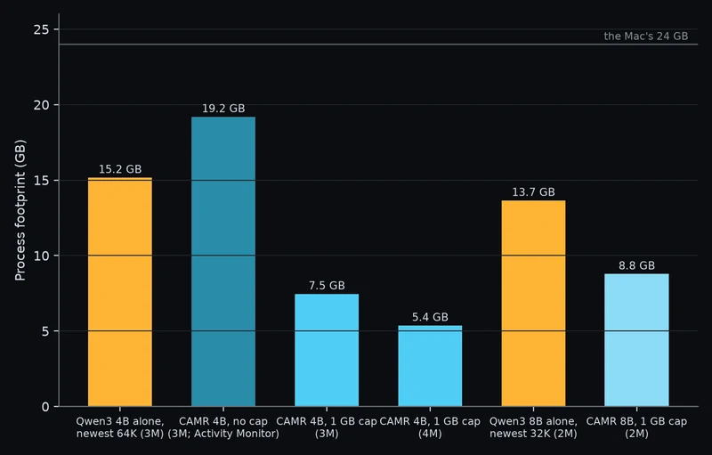
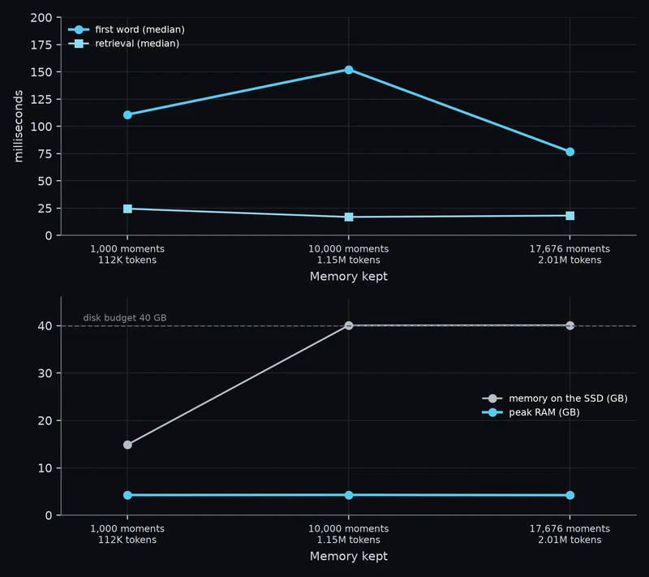
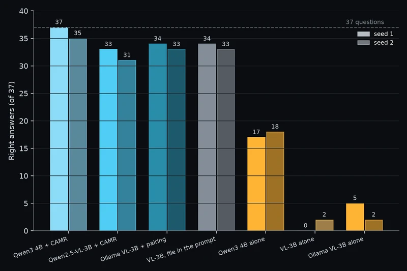
Every Long Haul number
| Right answers | 64K | 256K | 1M | 2M | 3M | 4M | First word |
|---|---|---|---|---|---|---|---|
| Qwen3 4B + CAMR | 25/34 | 26/40 | 25/69 | 29/73 | 29/73 | 29/73 | 0.21–0.31 s |
| Qwen3 4B alone | 18 | 14 | 20 | 11 | 12 | 13 | 0.32–0.38 s |
| Claude Sonnet 5.5 alone | 28 | 35 | 43 | 32 | 13 | 10 | 13–53 s |
| Claude Opus 5.5 alone | 24 | 33 | 42 | 31 | – | – | 19–105 s |
| Claude Haiku 5.5 alone | 22 | 21 | 17 | 10 | 10 | 10 | 13–43 s |
3M and 4M ask the 2M questions again on a longer script. MacBook Pro M5 Pro, 24 GB, 4 November 2026. Records in v2/records/bench/2026-11-04/; method in v2/docs/site/benchmarks.md.
CAMR vs RAG vs the cloud
Same answers as RAG. Sooner, with less read again.
The app has a Compare button: one question, one model, one memory, answered three ways side by side. CAMR and RAG both find Patrick Chacha; the model alone does not.
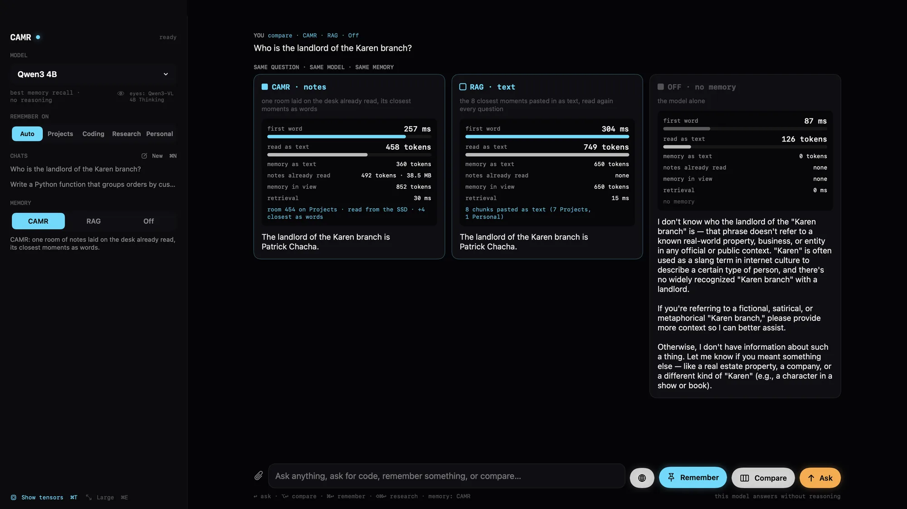
Update pending A new head-to-head run is in progress. These are the current measured numbers (3–5 Nov 2026).
| Measured | CAMR · notes | RAG · text | Cloud yardstick |
|---|---|---|---|
| Facts known Qwen3 1.7B, three scripted 12-week lives, of 255 | 164 | 166 level | – |
| Errands done right same lives, tasks filled from memory, of 255 | 122 | 40 | – |
| First word same lives, Qwen3 1.7B | 0.07 s | 0.15 s | – |
| Live in the app Compare, Qwen3 4B, same answers | 50–80 ms sooner · ~40% less text re-read | baseline | – |
| Long Haul at 4M right of 73 | 29 Qwen3 4B | – | 10 Sonnet 5.5 alone |
| First word, Long Haul | 0.2–0.3 s | – | 13–105 s Sonnet, Opus |
RAG baseline on the scripted lives: the first CAMR engine, which retrieves text notes and pastes them into the prompt (E-20, E-25 in v2/DECISIONS.md). In the app, RAG pastes the 8 closest moments as text.
The Mac app
Chat with Memory: CAMR · RAG · Off.
A native Mac app for your own model: switch memory per chat, Compare all three, and open the tensor view to watch the room flow into the model's 36 layers.
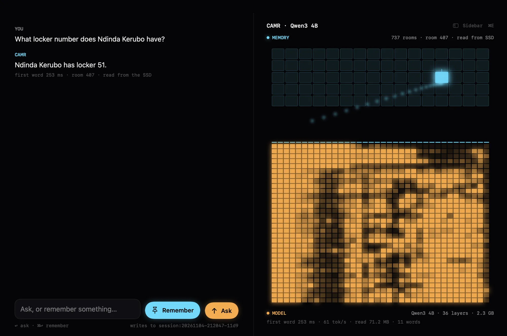
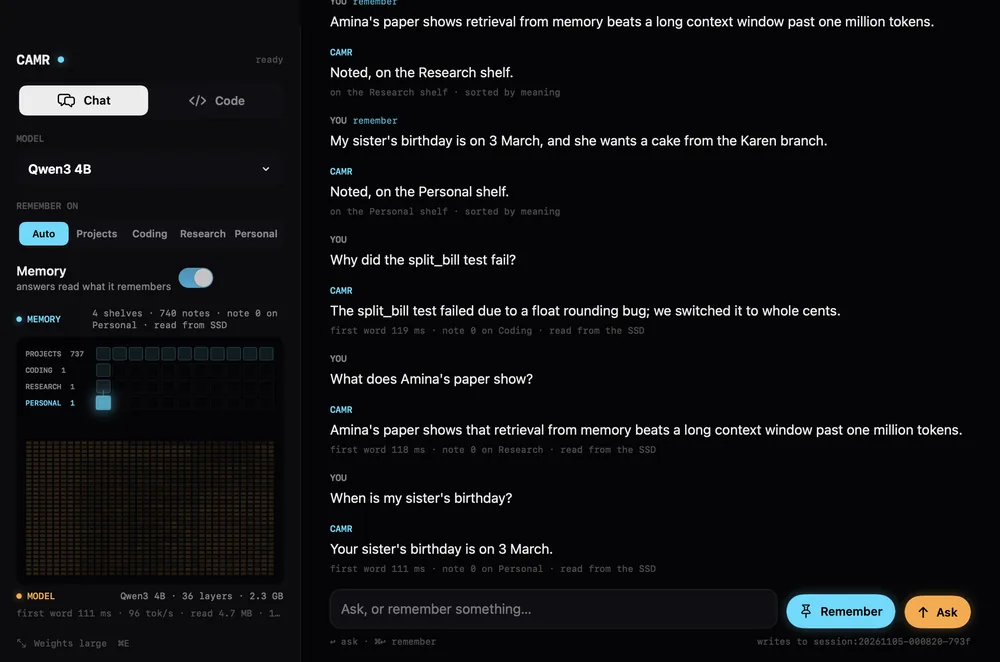
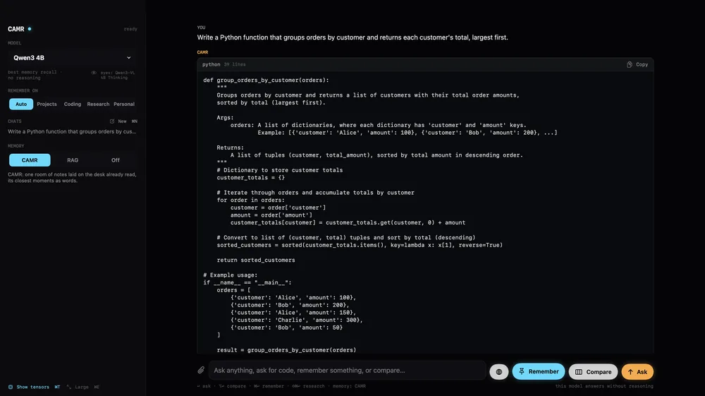
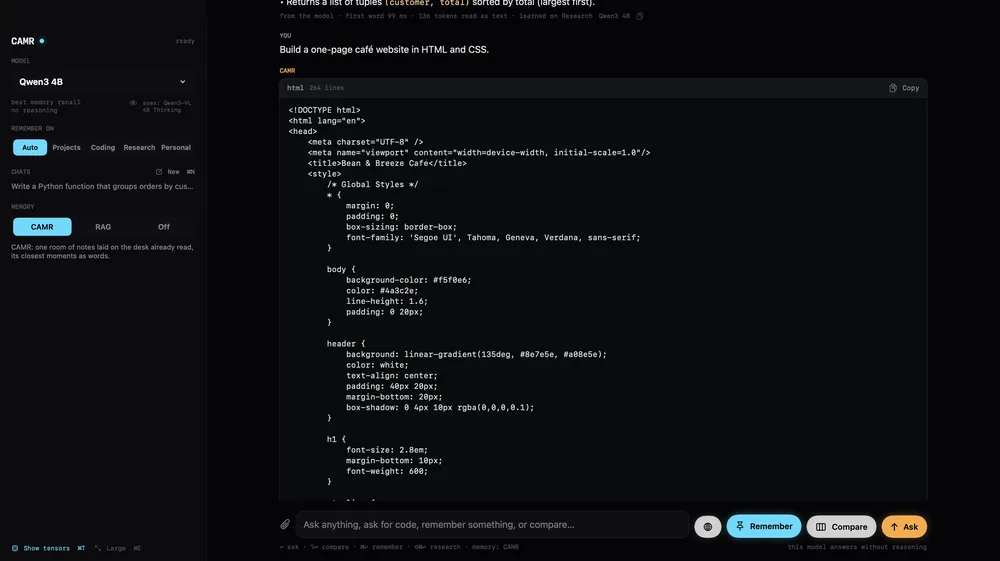
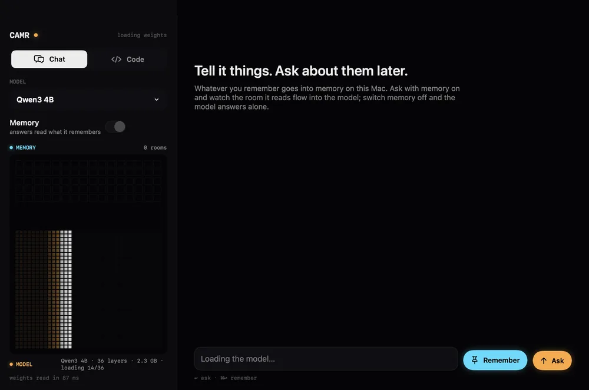
CAMR for Mac
Download the app
For Apple-silicon Macs (M1 or later). Unzip, move CAMR to Applications and open it. It is signed ad hoc, so the first time, right-click CAMR and choose Open.
Built by apps/mac/build.sh into dist/CAMR.app.zip.
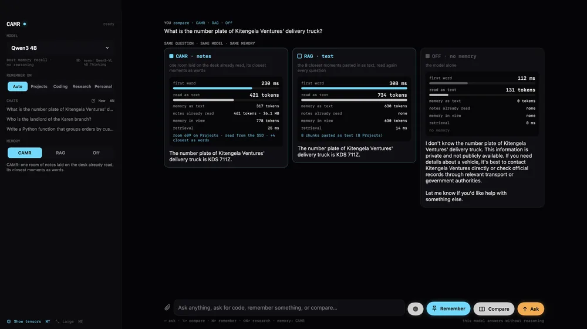
Integrations
Your model, CAMR's memory, one URL.
CAMR sits in front of the runtime you already use and speaks OpenAI's API on http://127.0.0.1:11436/v1. Or call it from Python.
packaging/configs/ollama.sh
# 1. The ollama CLI, through CAMR's Ollama pairing (it speaks Ollama's own API)
camr ollama & # 127.0.0.1:11435, forwards to Ollama on 11434
OLLAMA_HOST=127.0.0.1:11435 ollama run qwen3:4b
# 2. Any OpenAI client, through CAMR's OpenAI-compatible endpoint
camr serve --backend ollama & # 127.0.0.1:11436/v1, forwards to Ollama's /v1
export OPENAI_BASE_URL=http://127.0.0.1:11436/v1 OPENAI_API_KEY=camrThrough Ollama, memory goes in as words (the same rooms, chosen the same way). Both doors share ~/.camr/default.
packaging/configs/lmstudio.sh
lms server start # LM Studio's server, on 127.0.0.1:1234
lms load <model> # or load one in the LM Studio app
camr serve --backend lmstudio & # CAMR on 127.0.0.1:11436/v1, forwarding to :1234
# in any client that used LM Studio's server, change only the base URL:
# http://localhost:1234/v1 -> http://127.0.0.1:11436/v1
export OPENAI_BASE_URL=http://127.0.0.1:11436/v1 OPENAI_API_KEY=lm-studiopackaging/configs/curl.sh
# tell it something (remembered once the answer ends)
curl -s http://127.0.0.1:11436/v1/chat/completions -H 'Content-Type: application/json' -d '{
"model": "qwen3:4b",
"messages": [{"role": "user", "content": "The client picked terracotta, #C2410C, as the main colour."}]
}'
# ask about it later, streaming
curl -sN http://127.0.0.1:11436/v1/chat/completions -H 'Content-Type: application/json' -d '{
"model": "qwen3:4b", "stream": true,
"messages": [{"role": "user", "content": "What main colour did the client pick?"}]
}'
# one request without memory, and what each request cost
curl -s ... -H 'X-CAMR-Memory: off' ...
curl -s http://127.0.0.1:11436/camr_engine/metricspackaging/configs/opencode.json → your project or ~/.config/opencode/
{
"$schema": "https://opencode.ai/config.json",
"provider": {
"camr": {
"npm": "@ai-sdk/openai-compatible",
"name": "CAMR (local model with memory)",
"options": { "baseURL": "http://127.0.0.1:11436/v1", "apiKey": "camr" },
"models": {
"qwen3:4b": { "name": "Qwen3 4B with CAMR memory" },
"qwen3:8b": { "name": "Qwen3 8B with CAMR memory" }
}
}
},
"model": "camr/qwen3:4b"
}v2/docs/site/library.md · the health check
import datetime as dt
from pathlib import Path
from camr_engine.memory import Memory
from camr_engine.models import Embedder, Reader
reader, embedder = Reader(), Embedder() # Qwen3-1.7B and Qwen3-Embedding-0.6B, MLX, 4-bit
m = Memory(reader, embedder, Path("~/.camr/mine").expanduser())
m.remember("[2026-01-05] My sister Amina moved to Nakuru last week.", 0)
m.remember("[2026-01-06] Paid the electricity bill.", 1)
reply = m.answer("Where does my sister live?", dt.date(2026, 1, 7))
print(reply.text, f"first word after {reply.ttft_s:.3f} s")
m.save()
m.close()packaging/homebrew/camr.rb · from a clone, no public tap yet
brew tap-new $USER/camr
cp packaging/homebrew/camr.rb "$(brew --repo $USER/camr)/Formula/"
brew install --HEAD $USER/camr/camr
brew services start camr # camr serve --backend ollama, kept runningpackaging/install.sh · packaging/npm
# the installer: into ~/.camr/engine, the command into ~/.local/bin
curl -fsSL https://raw.githubusercontent.com/Satasdin/CAMR/camr-build/packaging/install.sh | sh
camr doctor
# or with uv / pipx
uv tool install "camr-engine @ git+https://github.com/Satasdin/CAMR.git@camr-build#subdirectory=v2"
# or npm, from a clone (camr-memory is not on the registry yet)
npm install -g ./packaging/npm
camr-memory serve --backend ollamaFAQ and limits
What it costs, and what it doesn't do yet.
How is this different from RAG?
RAG retrieves text chunks and pastes them into the prompt, so the model reads them again for every question. CAMR keeps the model's own keys and values (its "notes") for what you told it, in rooms on the SSD, and lays the one room a question needs in front of the model already read. The model then reads only the new words. In the app, on the same answers, that brought the first word 50–80 ms sooner with about 40% less text re-read.
Does it run on Intel Macs, Windows or Linux?
No. The engine runs its models with MLX, so it needs an Apple-silicon Mac, M1 or later. The Ollama pairing needs MLX too, for its embedder.
How much disk does memory take?
A lot, by design. One token of notes on Qwen3 1.7B is 112 KiB, about 29,000 times its text; a full 512-token room is 56 MiB. At 2.01M tokens told, memory filled a 40 GB disk budget. Notes kept at 8 bits halve that with the same scores at 64K and 256K, and rooms past the budget go to sleep as words, which are slower to read or cost one reading to wake.
Is a 4B with CAMR as smart as Claude?
No. It remembers more once the history passes Claude's window, but under 1M tokens Claude is ahead (Sonnet 43 of 69 at 1M, against 25). Small models still guess: on the scripted lives the 1.7B made up an answer to 25 of 45 questions about things never told. Two-hop questions, whose halves sit in different rooms, are weak, because each question gets one room.
Which models can read notes?
Models that keep keys and values in every layer, with plain RoPE: Qwen3 1.7B, 4B and 8B qualify. Hybrid models, such as a 27B with linear-attention layers, read the same memory as words. Notes belong to the model that wrote them.
Is my memory private?
The model, the memory and the answers stay on the Mac. Memory is plain files under ~/.camr, not encrypted, and there is no way yet to forget one moment; to forget everything, remove the memory folder. The installer downloads uv and the models; nothing else goes out.
Where do the numbers come from?
From dated records under v2/records/bench/, measured on a MacBook Pro M5 Pro with 24 GB, each naming the machine and the commit that made it. The method, every contender and every rerun command are in v2/docs/site/benchmarks.md and the thesis.